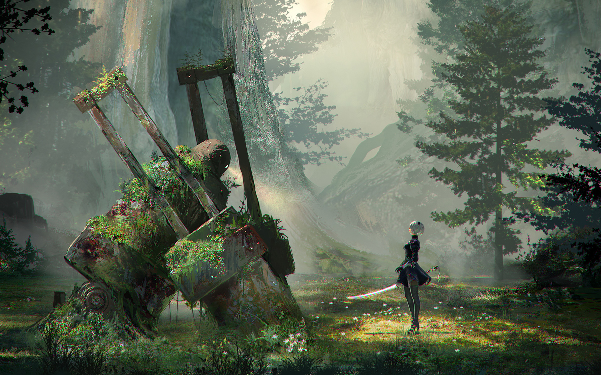

Bienvenue sur ce fan site sur Nier automata, ce dernier sert de test pour apprendre le HTML, CSS et JavaScript, il n'est donc pas complet.
Le jeu Nier : Automata est la propriété d'Ubisoft et Square Enix, tous droits leurs sont réservés.
Vous verrez ici quelques images tirées de l'univers du jeu :

2B face à une machine recouverte de verdure.
Trailer du jeu :
Synopsis :
En l'an 11945, la Terre a été abandonnée par les humains qui ont dû fuir après l'arrivée de machines extraterrestres organisées et puissantes. Au sol, seuls des androïdes sans nom sont envoyés pour combattre, contrôlée depuis une station orbitale.
L'histoire est suivie du point de vue de trois androïdes du YoRHa, la dernière génération d'androïdes. La première partie raconte le combat du point de vue du modèle YoRHa no 2 modèle B, raccourci en « 2B », androïde de combat calme et méthodique maniant
deux armes et accompagné du Pod 042, qui va assister la Résistance, le groupe d'androïdes de la génération précédente qui supervise au sol le combat, et découvrir des groupes de machines ne voulant plus combattre.
La deuxième partie reprend le parcours de « 9S »,
l'androïde scanner qui a accompagné « 2B » pendant son exploration du monde, qui manie une seule arme mais peut pirater les machines, ce qui lui permettra d'en découvrir plus sur les motivations des machines, notamment celles d'Adam et Eve, deux machines humanoïdes créées par le réseau. La troisième partie suit « A2 », un androïde de combat obsolète.